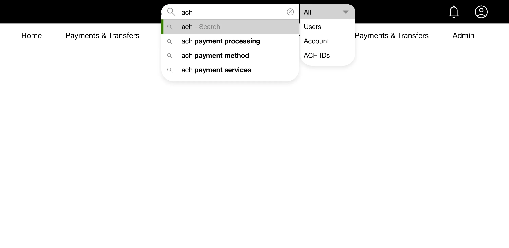
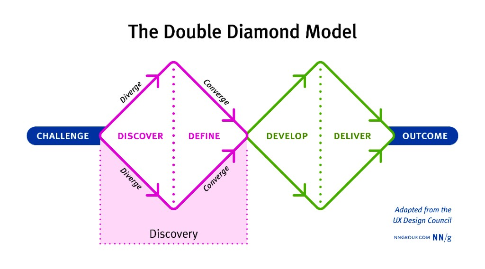
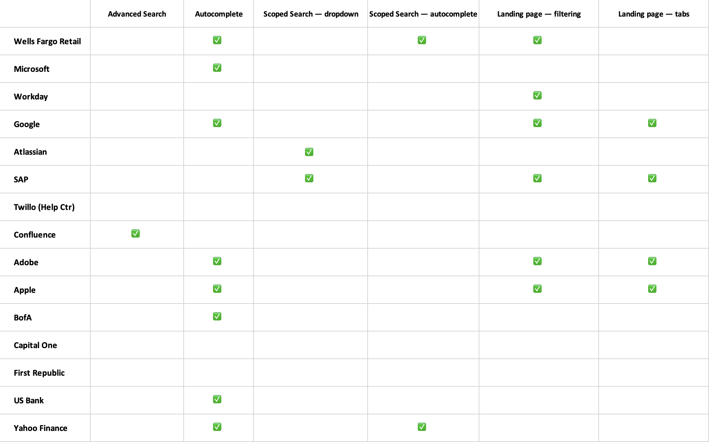

UX discovery: evaluating the need for a search component
Conduct a UX discovery to evaluate whether Pioneer Design System should commit resources to building a shared search component for Wells Fargo Commercial Bank.
Client
Wells Fargo, San Francisco, CA
My role
Senior Product Designer
Team
Pioneer Design System — used by 90+ applications within the commercial bank
Tools
Figma
Date
2023

Search discovery work for Pioneer Design System
About Pioneer Design System
The Pioneer Design System is a React framework that serves 90+ applications within Wells Fargo Commercial Bank.
We are a team of three designers, supported by product, producer, engineering, accessibility, and content teams.
We work Agile in two-week sprints with daily check-ins and weekly design reviews.
Quick summary
Situation
Our development partners have the bandwidth to build a search component, and our internal research suggests it could offer substantial value to our customers.
Task
Should our team commit resources to developing a search component, considering its potential impact and benefits?
Action
Discovery, Sprint 1: Define the problem, review internal research, interview stakeholders, and document use cases and recommendations.
Exploration, Sprint 2: Conduct comparative and competitive analysis, and create wireframes for key use cases.
Result
Our team agreed that adding a search feature would be highly beneficial for both our design partners and customers.
We put together recommendations for next steps, along with wireframe examples that follow best practices.
About a UX discovery
Discovery covers the Discover and Define stages of the double-diamond model. In the Discover stage, lines of inquiry diverge as a team explores the problem space. In the Define stage, the team aligns on an evidence-based problem statement and on a vision for the future.

The Double Diamond Model — adapted from the Design Council / NN/g
Reference: Nielsen Norman Group — Discovery definition
Sprint 1 · 10-day deliverable
Discover & Define
Questions I aimed to answer
Is the absence of a search component a genuine issue for our users, or are we addressing a problem that may not exist?
With over 90 applications within the commercial bank, what are the known use cases?
What do our stakeholders think?
What problems do we need to overcome?
Is our team aligned on the objective?
Problem statement
Our customers do not have the ability to search within any of our apps.
Internal UX research
I reached out to our UX research team to check for any prior research. Key takeaways:
Not all applications (or users) are impacted to the same degree.
Administration, onboarding, dashboard & reporting, and customer support have probably the greatest need.
Task-oriented users — people who visit with a specific task in mind — expressed disappointment when they can’t efficiently complete that task without search.
Known use cases across 90+ applications
I spoke with our Pioneer product owner to identify which apps would benefit most. Findings:
Negative perception: Lack of search can feel outdated or less user-friendly.
Global search has been one of the most requested new features.
Administration — search for a user (post login).
Reports & Insights (dashboards) — business intelligence and data visualization.
Onboarding — a quick way for new customers to find what they need.
Help and technical support.
Inline search — search inside a data table or user flow.
What do our stakeholders think?
I interviewed Pioneer partners — developers, content strategists, accessibility experts, app-team designers, and product owners from outside our immediate team.
App team design manager
Offer the user two distinct pathways for search:
Go directly to a result
Go to a landing page, then filter and sort or create a new search
App team designers
Pre-search filtering (scoped search) would be useful — customers are power users.
Development / technology leader
We’ve been aware of the need for search, but only now have the capability to move forward with development.
Strategy / content
Metadata — will each journey (app) team be responsible for tagging content, removing duplicates, and ensuring proper schema markup?
Accessibility
Screen readers — continue to support assistive tech and tag content appropriately.
App product owners
Suggest a simple off-the-shelf solution.
Search flow
From those discussions, we need two search flows: one for navigating directly to a result, and another for a landing page with multiple results.
Search flow — landing page vs. direct result
Revised problem statement
Our customers need to quickly and confidently search for content in order to:
Be more productive
Reduce friction
Increase engagement
Decrease support calls
Onboard faster
Partner recommendations
General
MVP: Start with a light implementation (administration / search for a user), then add functionality over time (global search).
Global search: Prefer a Google-like pattern — customers already know that model.
Support both a direct result path and a results landing page.
Search should be able to access data from older databases.
Content — metadata
Users should be able to search across all content types.
Define search categories; optimize content for keywords.
Structure content with standard HTML (headings, paragraphs, lists).
Use descriptive URLs; remove duplicate content; add title tags and meta descriptions.
Once search is live, each team should:
Ensure content is tagged and organized for indexing.
Test search performance and relevance regularly.
Monitor and resolve duplicate or inaccurate results.
Continuously update metadata and schema.
Conduct user research on how people search; keep monitoring after launch.
Open questions
Will each team maintain their own database?
Will search scope be limited to specific pages/sections, or include all content?
Should app teams access data from other databases?
What is the impact on site speed or server resources?
Sprint 1 conclusions
Is the absence of search a genuine issue?
Yes — it affects usability, though not all apps or users to the same degree.
Known use cases?
Global search, administration, onboarding, reports & insights, help and support, account lookup, and inline search.
Stakeholder view?
Full approval to move forward, with reservations from content partners around metadata.
Problems to overcome?
Do we have sufficient resources to streamline metadata?
Team alignment?
Yes — sketches and wireframes planned for Sprint 2.
Sprint 2 · 10-day deliverable
Develop
With the team aligned, Sprint 2 focused on:
Search best practices
How competitors solved the problem
Wireframes for two common bank flows
Search best practices
Use autocomplete (keyword suggestions).
Differentiate typed queries from suggested (autocompleted) terms.
Let users go directly to a result or to a landing page with filter/sort.
When search is scoped, state the scope on the results page.
Scoped search is valuable but risky if users forget to reset filters to “ALL.”
Global search — full search box in the header across all content.
Show a diverse set of results; include scope in suggestions.
I reviewed financial products and SaaS applications:
Scoped search is rarely used well — it often complicates the experience.
A straightforward search that lands on a results page with filtering is the clearer pattern.

Search features — competitive landscape
Wireframe exploration
Search for account number in a user flowGlobal search
Conclusion
Based on this UX discovery, the Pioneer team agreed that developing a search component would provide significant value for both design partners and customers.
The main challenge to success: ensuring metadata is properly tagged.
Update
I continue to stay informed on search best practices and new developments in the field.
Additional autocomplete best practices
Show suggestions on focus (recent or trending searches) so users notice them.
Limit suggestions to about ten.
Show scoped keyword suggestions — ratings, products, support, etc.
Show the number of matches for each scope.
Autocomplete is more than keyword suggestions
Reassures users they are on the right path
Corrects misspellings
Categorizes or scopes results
Uses type-ahead for appending
Landing page and filtering
Sidebar filters can cause layout shifts — users have to refocus after every change.
Decouple filtering from the results layout where possible.
User behavior
Display active filter choices at the top of the page.